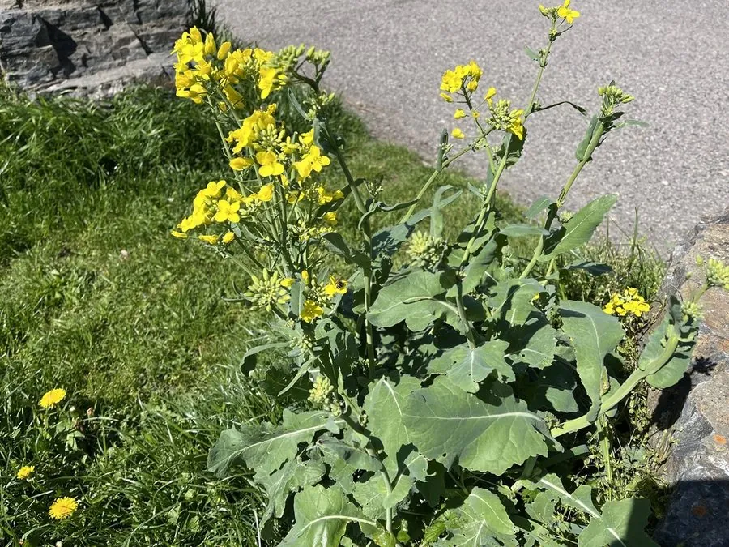

农作物与经济植物 · 植物界
油菜 Brassica napus

油菜的种子可榨取菜籽油，是中国最重要的食用油料作物之一，春季金黄色的花海也是乡村旅游的景观。
- 分类
- 门被子植物门纲双子叶植物纲目十字花目科十字花科属芸薹属
- 栖息环境
- 温带与亚热带平原农田，喜凉爽湿润、光照充足
- 地理分布
- 原产欧洲与亚洲，现中国长江流域、加拿大、印度等地广泛栽培
- 保护级别
- 暂无评估（栽培作物）
物种志
油菜（甘蓝型油菜）是十字花科一二年生草本，株高 0.5–1.5 m，茎直立，多分枝。叶片互生，基生叶有柄，茎生叶基部抱茎，表面有蜡粉。花为总状花序，金黄色，四瓣十字形，雄蕊六枚，四强雄蕊。果实为长角果，成熟后开裂，内含 10–20 粒球形种子，颜色呈黑、褐或黄，含油量约 40%。
油菜起源于欧洲地中海地区与亚洲，由甘蓝与芜菁杂交演化而来，中国是世界上最大的油菜生产国之一，长江流域冬油菜种植广泛。它喜凉爽湿润、光照充足，耐寒性较强，常以水稻与油菜轮作的方式种植。油菜籽可榨取菜籽油，菜籽饼是优质饲料和肥料；油菜花在春季形成大片金黄色花海，带动乡村旅游。双低油菜（低芥酸、低硫苷）品种的推广，使菜籽油的营养价值明显提高。
形态与习性
- 株高0.5–1.5 m，茎直立多分枝
- 花金黄色总状花序，四瓣十字形
- 果实长角果，成熟后开裂
- 种子含油量约 40%
- 主要用途菜籽油与饼粕饲料
- 轮作常与水稻轮作
- 品种双低油菜推广广泛
趣味知识
- 油菜靠近根部的叶子有叶柄，越往上叶柄越短，最后抱茎生长。
- 油菜花田是春季重要的蜜源，油菜蜜产量很大。
- 双低油菜籽榨出的油芥酸低、硫苷少，营养价值更高。
生态关系
- 传粉 ← 中华蜜蜂 重要农业传粉者